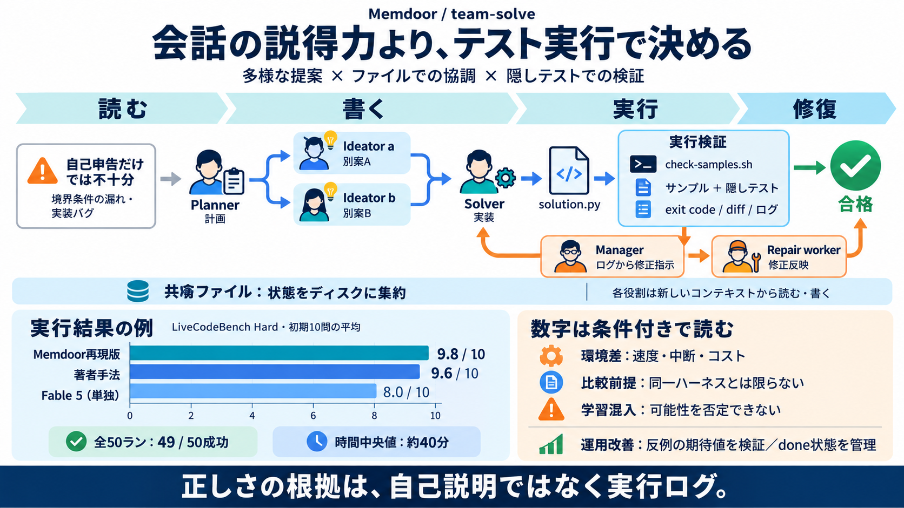

Qwen3.8 27B - API Pricing & Benchmarks | OpenRouter
# Qwen: Qwen3.8 27B qwen/qwen3.8-27b Model weights Compare Qwen3.8 27B is an open-weight dense vision-language model…

# Qwen: Qwen3.8 27B qwen/qwen3.8-27b Model weights Compare Qwen3.8 27B is an open-weight dense vision-language model…
| API Provider | Input (1M) | Output (1M) | Blended | Speed (t/s) | TTFT | --- --- --- | | DeepInfra | $0.15\ | $1.87…
Throughput 613tok/s P50, best across providers Latency 0.20s P50, best provider AutoExacto benchmarks GPQA Diamon…
TypingMind's interface is far superior to standard chat UIs. ### Model flexibility Switch between Qwen: Qwen3.8 27B an…
Qwen3.8 27B Qwen3.8 27B is an open-weight dense vision-language model from Qwen. It is suited for coding, professional …